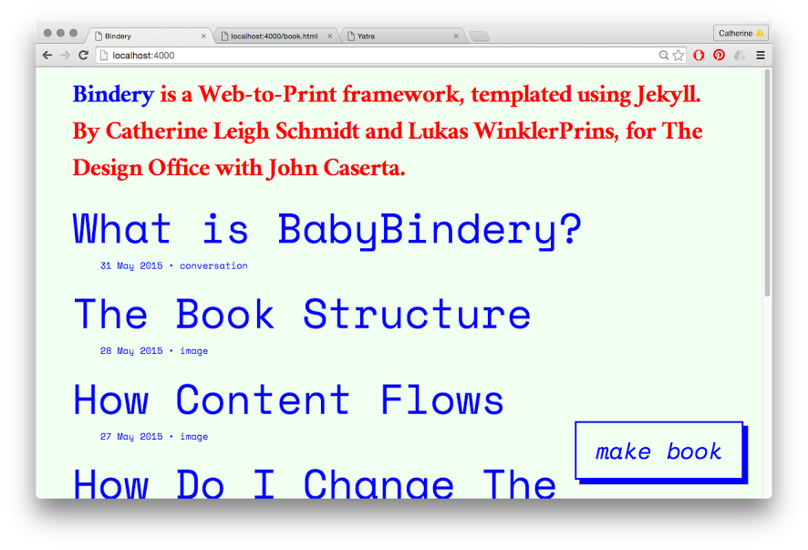
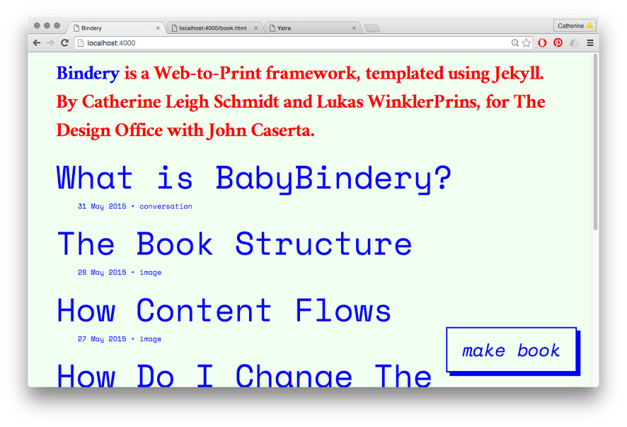
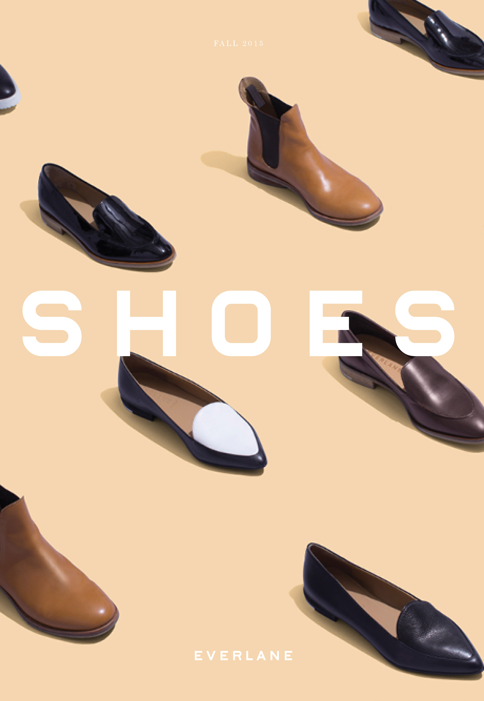
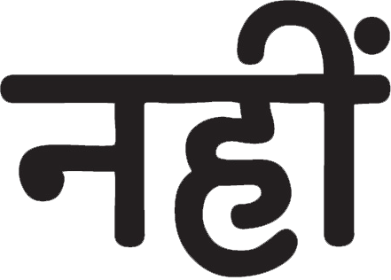
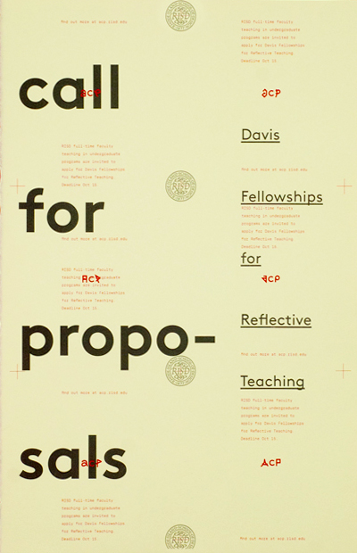
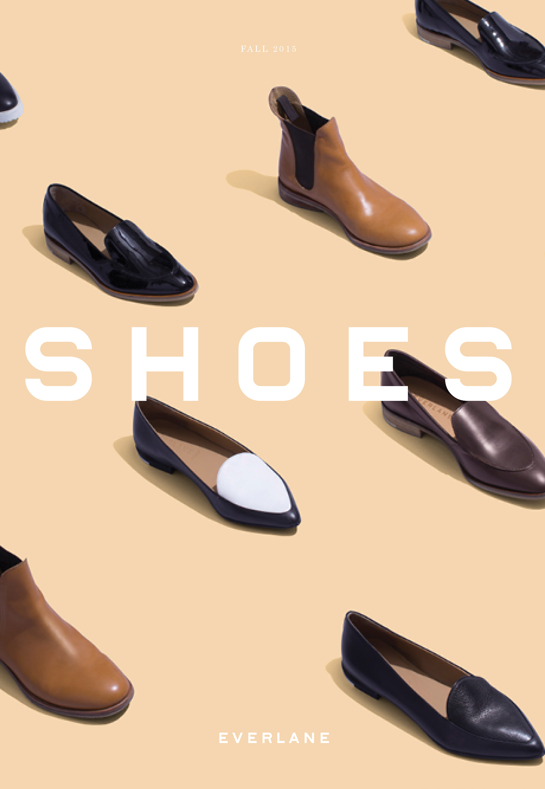
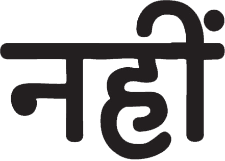
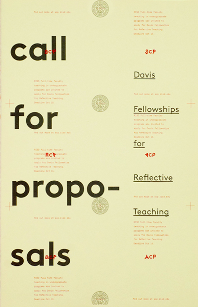

Catherine Leigh Schmidt is a designer. She makes fonts, forms, code, and hopefully ideas. She got a BFA in Graphic Design from RISD in 2014. She was born in 1992.
- github
- aren.na
- hi@cath.land
- @cathschmidt(I tweet a lot)
- cathschmidt
- catherine leigh schmidt
Current Projects
 


 




